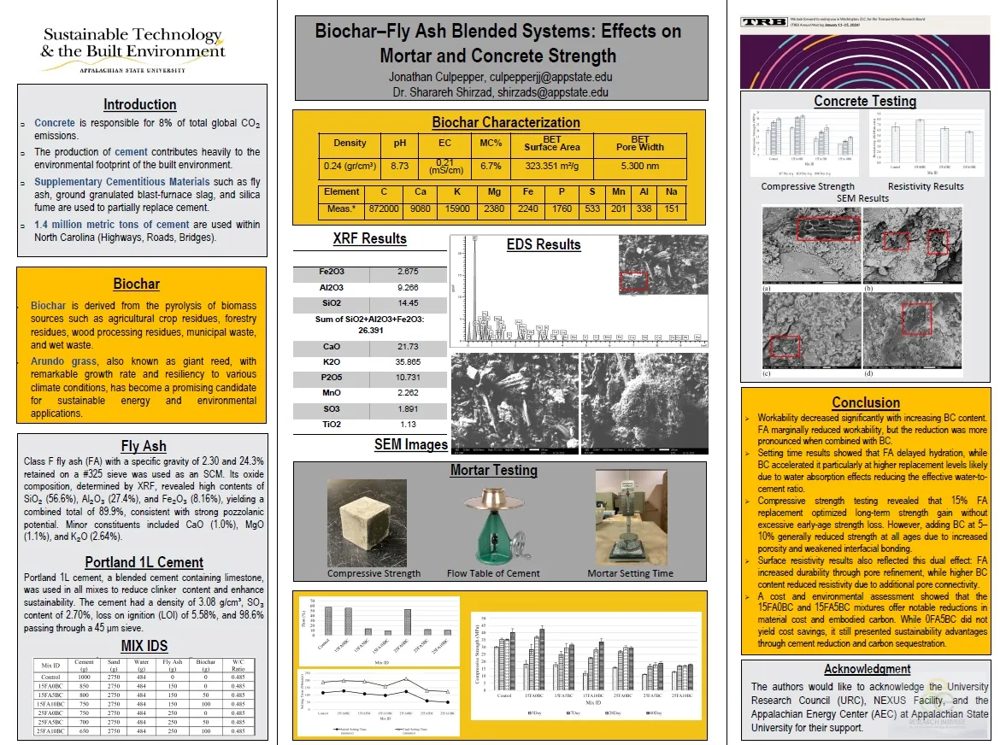
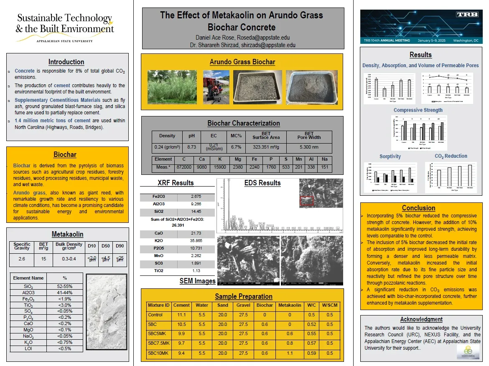
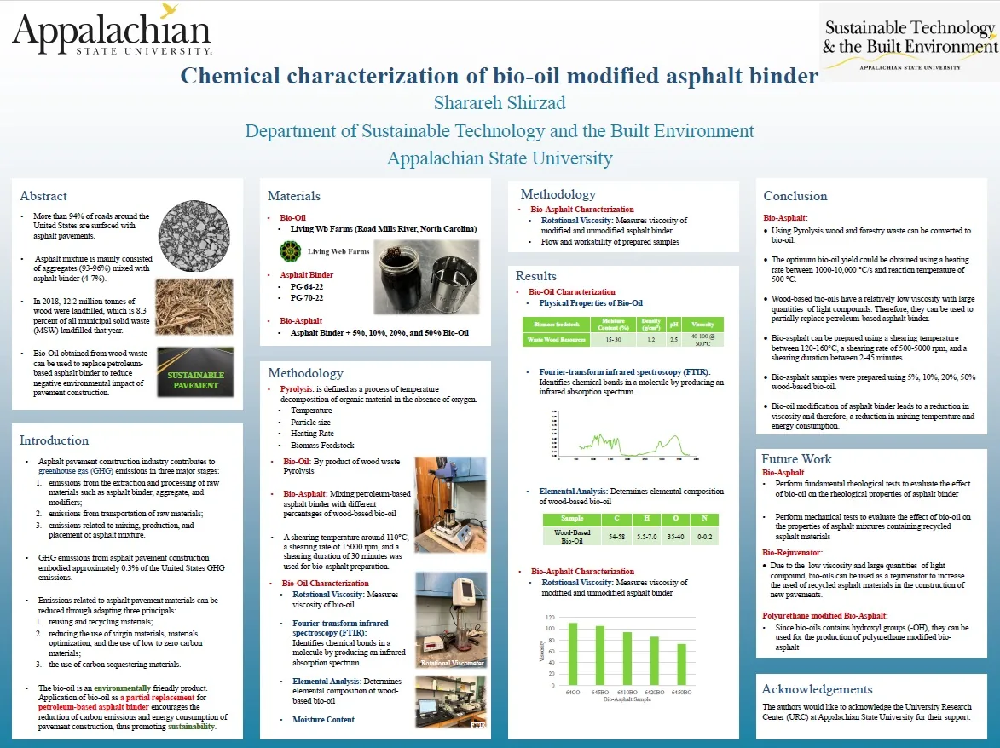

Research
In our lab, we develop sustainable and low-carbon infrastructure materials that integrate performance, durability, and intelligent functionality. We engineer biochar-modified cementitious systems by systematically investigating particle size, feedstock type, replacement percentage, and moisture condition to optimize mechanical performance, durability, and carbon reduction potential. We design self-sensing concrete systems for structural health monitoring (SHM), enabling real-time damage detection through piezoresistive behavior. We also explore self-healing and polyurethane-modified asphalt technologies to enhance crack resistance, durability, and lifecycle performance of pavement systems. Across these efforts, we integrate machine learning techniques to optimize mix design, predict material performance, and improve materials testing efficiency, advancing data-driven and climate-resilient infrastructure solutions.
Research Team
Lab Director: Dr. Sharareh Shirzad
Assistant Professor & Program Director, Building Science
Appalachian State University
Current Students
Michael Ayiku
M.S. Student
Influence of Dry and Saturated Surface Dry Biochar on Concrete Performance and Long-Term Strength Development
Chris (CJ) Burns
Undergraduate Researcher
Optimizing Biochar Fineness for Enhanced Workability and Strength in Cement Mortar
Lab Alumni
- Jonathan Culpepper — M.S. in Sustainable Building Design and Construction
- Daniel Rose — M.S. in Sustainable Building Design and Construction
- Hyla Zouzias — M.S. in Technology
Selected Publications
- Shirzad, S., Mahyari, E., Culpepper, J., and Burns, C. J. (2025). “Biochar–Fly Ash Blended Systems: Experimental Evaluation, Microstructural Characterization, and Predictive Modeling of Strength Development in Sustainable Mortar and Concrete.” Construction and Building Materials, Volume 509, 31 January 2026, 145216. — View Article
- Marandi, N., Shirzad, S. (2025). “Sustainable Cement and Concrete Technologies: A Review of Materials and Processes for Carbon Reduction.” Innovative Infrastructure Solutions, 10:408. — View Article
- Rose, D., Shirzad, S. (2024). “Innovations in Green Concrete: Combining Metakaolin and Arundo Grass Biochar for Enhanced Sustainability.” Sustainability, 16, 11219. — View Article
- Shirzad, S., Zouzias, H. (2024). “Enhancing the Performance of Wood-Based Bio-Asphalt: Strategies and Innovations.” Clean Technologies and Environmental Policy. — View Article
- Shirzad, S., Idris, I. I., Hassan, M. M., and Mohammad, L. N. (2023). “Self-Healing Capability and Mechanical Properties of Asphalt Mixtures Prepared with Light-Activated Polyurethane Prepolymer Modified Asphalt Binder.” Transportation Research Record. — View Article
Recent Presentations
- Burns, C. J., and Shirzad, S. “Optimizing Biochar Fineness for Enhanced Workability and Strength in Cement Mortar.” CRC and CI Joint Conference, March 2026, San Antonio, TX.
- Culpepper, J., and Shirzad, S. “Biochar–Fly Ash Blended Systems: Effects on Mortar and Concrete Strength.” Transportation Research Board Annual Meeting, Jan 2026, Washington, DC.
- Rose, D., and Shirzad, S. “The effect of Metakaolin on the Properties of Biochar Concrete.” Transportation Research Board Annual Meeting, Jan 2025, Washington, DC.
- Shirzad, S. and Zouzias, H. “Chemical and Rheological Characterization of Polyurethane Modified Bio-Asphalt.” International Airfield & Highway Pavements Conference, June 2023, Austin, TX.



Gallery
To add more images: open the galleryImages list in the script and add a new line.
Contact
Email:
shirzads@appstate.edu
Sharareh Shirzad
Sustainable Technology and the Built Environment
Appalachian State University
Katherine Harper Hall
Boone, NC